1과목: 수질오염개론
1. 바닷물 중에는 0.⑤4M의 MgCl2가 포함되어 있다. 바닷물 250ml에는 몇 g의 MgCl2가 포함되어 있는가? (단, Mg 및 Cl의 원자량은 각각 24.3 및 35.5임)
2. 최종 BOD농도가 250mg/L인 글루코스(C6H12O6)용액을 호기성 처리할 때 필요한 이론적 질소(N)농도는? (단, BOD5 : N : P = 100 : 5 : 1, 탈산소계수(k = 0.01hr-1), 상용대수 기준)
3. 5g의 Ca(OH)2를 Ca(HCO3)2와 완전히 반응 시킨다면 CaCO3의 이론적 생성량은? (단, Ca 원자량 : 40)
4. 액체내의 콜로이드들을 응집시키는데 기본적 메카니즘과 가장 거리가 먼 것은?
5. 산업폐수의 BOD5가 235mg/L이며, BODu는 350mg/L이라면 BOD3은? (단, 기타 조건은 같음, base는 상용대수)
6. 약산인 0.01N-CH3COOH가 18% 해리되어 있다면 이 수용액의 pH는?
7. 부영양화의 영향으로 틀린 것은?
8. 자당(sucrose, C12H22O11)이 완전히 산화될 때 이론적인 ThOD/ThOC 비는?
9. Ca(OH)2 농도가 50mg/L인 용액의 pH는? (단, Ca(OH)2는 완전 해리되며, Ca의 원자량은 40이다.)
10. 지하수 오염의 특징으로 틀린 것은?
11. 용액을 통해 흐르는 전류의 특성으로 틀린 것은?
12. 어떤 A도시에 유량 4.2m3/sec, 유속 0.4m/sec, BOD 7mg/L인 하천이 흐르고 있다. 이 하천에 유량 25.2m3/min, BOD 500mg/L인 공장폐수가 유입되고 있다면 하천수와 공장폐수의 합류지점의 BOD는? (단, 완전 혼합이라 가정함)
13. 생분뇨의 BOD는 19500ppm, 염소이온 농도는 4500ppm이다. 정화조 방류수의 염소이온 농도가 225ppm이고 BOD농도가 30ppm일 때, 정화조의 BOD 제거 효율은? (단, 희석 적용, 염소는 분해되지 않음)
14. 진핵세포 또는 원핵세포 내 기관 중 단백질 합성이 주요 기능인 것은?
15. 탈산소계수가 0.15/day이면 BOD5와 BODu의 비는? (단, BOD5/BODu, 밑수는 상용대수이다.)
16. 어떤 시료의 생물학적 분해가능 유기물질의 농도가 35mg/L이며, 시료에 함유된 물질의 경험적인 분자식을 C6H11ON2라고 할 때 이 물질이 완전 산화되는데 소요되는 산소농도(mg/L)는? (단, 분해 최종산물은 CO2, H2O, NH3이다.)
17. 최종 BOD가 15mg/L, DO가 5mg/L인 하천의 상류지점으로부터 6일 유하거리의 하류지점에서의 DO농도는 몇 mg/L인가? (단, DO 포화농도는 9mg/L, 탈산소계수는 0.1/day, 재폭기 계수는 0.2/day이다. 상용대수 기준, 온도영향은 고려치 않음)
18. 0.1 ppb Cd 용액 1L 중에 들어 있는 Cd의 양(g)은?
19. 에탄올(C2H5OH) 300mg/L가 함유된 폐수의 이론전 COD값은? (단, 기타 오염물질은 고려하지 않음)
20. 다음의 기체 법칙 중 옳은 것은?
2과목: 상하수도계획
21. 계획급수인구 결정시 시계열경향분석에 의한 장래인구의 추계방법이 아닌 것은?
22. 상수도시설인 배수지 용량에 대한 설명으로 옳은 것은?
23. 예비용량을 감안한 정수시설의 적정 가동율은?
24. 펌프의 토출량이 12 m3/min, 펌프의 유효흡입수두 8m, 규정회전수 2000회/분인 경우, 이 펌프의 비교 회전도는? (단, 양흡입의 경우가 아닙)
25. 정수시설인 용존공기부상 공정 중 플록형성지에 관한 설명으로 틀린 것은?
26. 배수지의 고수위와 저수위와의 수위차, 즉 배수지의 유효수심의 표준으로 적절한 것은?
27. 하수처리, 재이용계획에서 계획오염부하량 및 계획유입수질에 관한 설명으로 틀린 것은?
28. 하천수를 수원으로 하는 경우, 취수시설인 취수문에 대한 설명으로 틀린 것은?
29. 다음은 상수 급수시설인 급수관의 배관에 대한 내용이다. ( )안에 옳은 내용은?
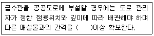
30. 펌프 수격작용(Water hammer)의 방지대책으로 틀린 것은?(단, 수주분리 발생의 방지법 기준)
31. 상수도시설인 정수시설 중 급속 여과지의 여과모래에 대한 기준으로 틀린 것은?
32. 하수처리시설 중 소독시설에서 사용하는 오존의 장단점으로 틀린 것은?
33. 취수지점으로부터 정수장까지 원수를 공급하는 시설 배관은?
34. 상수도관 부식의 종류 중 매크로셀 부식으로 분류되지 않는 것은? (단, 자연 부식 기준)
35. 배수시설인 배수관의 최소동수압 및 최대정수압 기준으로 옳은 것은? (단, 급수관을 분기하는 지점에서 배수관내 수압기준)
36. 하수 고도처리(잔류 SS 및 잔류 용존유기물 제거)방법인 막 분리법에 적용되는 분리막 모듈 형식과 가장 거리가 먼 것은?
37. 계획오수량에 관한 설명으로 틀린 것은?
38. 하수슬러지 농축방법 중 잉여슬러지 농축에 부적합한 것은?
39. 막여과 정수시설의 막을 약품 세척할 때 사용되는 약품과 제거가능 물질을 나열한 것 중 잘못된 것은?
40. 하수관거의 접합방법 중 굴착 깊이를 얕게 함으로써 공사 비용을 줄일 수 있으며 수위상승을 방지하고 양정고를 줄일 수 있어 펌프로 배수하는 지역에 적합하나 상류부에서는 동수경사선이 관정보다 높이 올라 갈 우려가 있는 것은?
3과목: 수질오염방지기술
41. 다음의 중금속과 그 처리방법으로 가장 거리가 먼 것은?
42. BOD 150mg/L의 폐수 800m3/d를 깊이 2m, 표면적 300m2의 살수여상조로 처리하는 공장에서 면적 절약을 위해 기존의 살수여상조를 깊이 4m, BOD 부하 0.6kg/m3ㆍd의 활성슬러지법 폭기조로 개조하였다면 살수여상조 및 폭기조의 각 표면적만을 비교하였을 때 약 몇 m2이 절약되는가?
43. 처리인구 5200명인 2차 하수처리시설로 폭기식 라군 공정을 설계하고자 한다. 유량은 380L/capㆍday, 유압 BOD5는 200mg/L, 유출 BOD5 20mg/L, K(반응속도상수) = 2.1/day이며 kg BOD5당 1.6kg산소가 필요하다면 필요 반응시간에 따른 총 라군 부피는? (단, 1차 반응, 1차 침전지에서 유입 BOD5의 33% 제거된다.)
44. 활성슬러지 처리시설의 유출수에 대장균이 107마리/100mL가 있다고 할 때 이를 200마리/00mL 이하로 낮추기 위해 필요한 염소잔류량(C1)은? (단, 접촉시간은 20분으로 규정한다.)
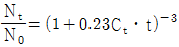
45. 직사각형 급속여과지를 설계하고자 한다. 설계조건이 다음과 같을 때, 급속여과지의 지수는 몇 개가 필요한가?
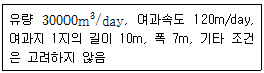
46. BOD 200mg/L, 유량25m3/hr인 폐수를 활성슬러지법으로 처리하고자 한다. BOD 용적부하를 0.6kg BOD/m3ㆍday로 유지하려면 폭기조의 수리학적 체류시간은?
47. BOD 200mg/L인 폐수가 1200m3/day로 폭기조에 유입되고 있다. 폭기조 부피는 400m3, MLSS 농도는 2000mg/L이다. F/M비를 0.15kgBOD/kgMLSSㆍd 로 유지하자면 MLSS농도를 얼마만큼 증가시켜야 되겠는가?
48. 역삼투 장치로 하루에 20000L의 3차 처리된 유출수를 탈염시키고자 한다. 25℃에서의 물질전달 계수는 0.2068L/{(day-m2)(kPa)}, 유입수와 유출수의 압력차는 2400kPa, 유입수와 유출수의 삼투압차는 310kPa, 최저 운전온도는 10℃이다. 요구되는 막면적은? (단, A10℃ = 1.2 A25℃)
49. 생물학적 질소, 인 제거공정에서 폭기조의 기능과 가장 거리가 먼 것은?
50. 속도경사(velocity grandient)에 대한 설명으로 틀린 것은?
51. 폭기조내의 MLSS 3000mg/L, 폭기조 용적이 500m3인 활성슬러지 처리공법에서 최종 침전지에서 유출하는 SS를 무시할 경우 매일 20m3 슬러지를 배출시키면 세포 평균 체류시간(SRT)은? (단, 배출 슬러지 농도는 1%)
52. 플록을 형성하여 침강하는 입자들이 서로 방해를 받으므로 침전속도는 점차 감소하게 되며 침전하는 부유물과 상등수간에 뚜렷한 경계면이 생기는 침전형태로 가장 적합한 것은?
53. 슬러지 개량을 위한 열처리의 장점으로 틀린 것은?
54. 폭기조 혼합액을 30분간 침전시킬 후 침전물의 부피가 600mL/L이고 이때 MLSS가 3000mg/L이면 SVI는?
55. 생물학적 인 제거 공정 중 A/O 공법의 장단점으로 틀린 것은?
56. 어떤 폐수의 암모니아성 질소가 10mg/L이고 동화작용에 충분한 유기탄소(CH3OH)를 공급한다. 처리장의 유량이 3000m3/day라면 미생물에 의한 완전한 동화작용 결과 생성되는 미생물생산량은? (단, 2OCH3OH+15O2+3NH3 → 3C5H7NO2+5CO2+34H2O를 적용한다.)
57. 폭기조의 MLSS농도를 3000mg/L로 유지하기 위한 슬러지 반송비는? (단, SVI = 120, 유입수내 SS는 무시한다.)
58. 폭기조의 유입수 BOD = 150mg/L, 유출수 BOD = 10mg/L, MLSS = 2500mg/L 미생물성장계수(Y) = 0.7kgMLSS/kgBOD, 내생호흡계수(ke) = 0.01day-1, 폭기시간(△t) = 6시간이다. 미생물체류시간(θc)은?
59. 최종 BOD 5kg을 혐기성 조건에서 안정화 시킬 때 생산되는 이론적 메탄의 양은? (단, 유기물은 C6H12O6로 가정 함)
60. 함수율이 98%이고 고형물내 VS함량이 65%인 축산폐수 200m3/day를 혐기성소화로 처리하고자 한다. 혐기성 소화조의 고형물 부하를 7.5kgVS/m3-day로 설계하고자 할 때 소화조의 용량은? (단, 축산폐수나 고형물의 비중은 1.0이다.)
4과목: 수질오염공정시험기준
61. 총유기탄소 분석기기 내 산화부에서 유기탄소를 이산화탄소로 산화하는 방법으로 옳게 짝지은 것은?
62. 음이온 계면활성제를 자외선/가시선 분광법으로 측정할 때 사용되는 시약으로 옳은 것은?
63. 자외선/가시선 분광법을 적용한 불소측정에 관한 설명으로 틀린 것은?
64. 부유물질 측정시 간섭물질에 관한 설명으로 틀린 것은?
65. 다음 금속류 분석 시료 중 최대 보존기간이 가장 짧은 것은?
66. 온도 측정시 사용되는 용어 중 ‘담금’에 관한 내용으로 옳은 것은?
67. 다음은 자외선/가시선 분광법을 적용하여 페놀류를 측정할 때 간섭물질에 관한 설명이다. ( )안에 옳은 내용은?
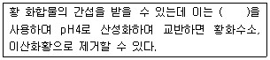
68. 적정법으로 염소이온을 측정할 때 정량한계로 옳은 것은?
69. 웨어의 수두가 0.8m, 절단의 폭이 5m인 4각 웨어를 사용하여 유량을 측정하고자 한다. 유량계수가 1.6일 때 유량(m3/day)은?
70. 다음은 대장균(효소이용정량법) 측정에 관한 내용이다. ( )안에 옳은 내용은?
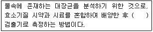
71. 냄새 측정시 잔류염소 제거를 위해 첨가하는 용액은?
72. 다음은 관내의 압력이 필요하지 않는 측정용 수로에서 유량을 측정하는데 적용하는 방법 중 용기에 의한 측정에 관한 내용이다. ( )안에 옳은 내용은?
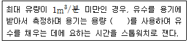
73. 총질소 실험방법과 가장 거리가 먼 것은? (단, 수질오염공정시험기준 적용)
74. 금속류인 바륨의 시험방법과 가장 거리가 먼 것은? (단, 수질오염공정시험기준 적용)
75. 수질오염공정시험기준 총칙에 관한 설명으로 옳지 않은 것은?
76. 다음 항목 중 시료 보존 방법이 나머지와 다른 것은?
77. 수질오염공정시험기준상 이온전극법으로 측정할 수 있는 대상 항목과 가장 거리가 먼 것은?
78. 다음은 자외선/가시선 분광법을 적용한 니켈의 측정 방법에 관한 내용이다. ( )안에 옳은 내용은?
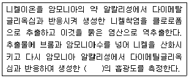
79. 다음은 크롬 분석에 관한 내용이다. ( )안에 옳은 내용은? (단, 크롬-자외선/가시선 분광법 기준)
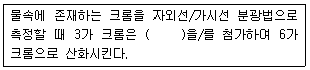
80. 파샬수로(Parshall flume)에 대한 설명으로 옳은 것은?
5과목: 수질환경관계법규
81. 시도지사가 골프장의 맹독성ㆍ고독성 농약의 사용여부를 확인하기 위해 골프장별로 농약사용량을 조사하고 농약잔류량을 검사하여야 하는 주기 기준은?
82. 다음은 환경부장관이 지정할 수 있는 비점오염원관리지역의 지정기준에 관한 내용이다. ( )안에 옳은 내용은?
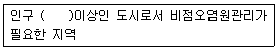
83. 다음은 오염총량관리 조사ㆍ연구반에 관한 내용이다. ( )안에 옳은 내용은?
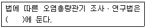
84. 환경부장관이 수립하는 대권역별 수질 및 수생태계 보전을 위한 기본계획(대권역계획)에 포함되어야 하는 사항과 가장 거리가 먼 것은?
85. 다음은 환경부장관이 수변생태구역 매수 등을 하기 위한 기준에 관한 내용이다. ( )안에 옳은 내용은?
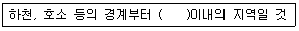
86. 특별시장ㆍ광역시장ㆍ특별자치도지사가 오염총량관리 시행계획을 수립할 때 포함하여야 하는 사항과 가장 거리가 먼 것은?
87. 사업자가 배출시설 또는 방지시설의 설치를 완료하여 당해 배출시설 및 방지시설을 가동하고자 하는 때에는 환경부령이 정하는 바에 의하여 미리 환경부 장관에게 가동개시 신고를 하여야 한다. 이를 위한하여 가동개시 신고를 하지 아니하고 조업한 자에 대한 벌칙 기준은?
88. 시도지사는 공공수역의 수질보전을 위하여 환경부령이 정하는 해발고도 이상에 위치한 농경지 중 환경부령이 정하는 경사도 이상의 농경지를 경작하는 자에 대하여 경작방식의 변경, 농약ㆍ비료의 사용량 저감, 휴경 등을 권고할 수 있다. 위에서 언급한 환경부령이 정하는 해발고도와 경사도 기준으로 옳은 것은?
89. 다음의 수질오염방지시설 중 물리적 처리시설이 아닌 것은?
90. 다음은 수질 및 수생태계 하천 환경기준 중 생활환경 기준에 적용되는 등급에 따른 수질 및 수생태계 상태를 나타낸 것이다. 어떤 등급의 수질 및 수생태계의 상태인가?
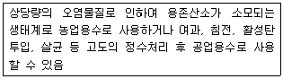
91. 다음은 호소수 이용 상황 등의 조사 측정에 관한 내용이다. ( )안에 옳은 내용은?
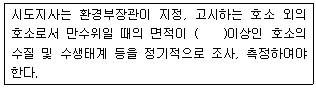
92. 환경부장관이 설치할 수 있는 측정망의 종류와 가장 거리가 먼 것은?
93. 비점오염원의 변경신고 기준으로 옳은 것은?
94. 수질오염경보 중 수질오염감시경보 단계가 ‘관심’인 경우 한국환경공단이사장의 조치 사항으로 옳은 것은?
95. 제조업의 배출시설(폐수무방류배출시설 제외)을 설치, 운영하는 사업자에 대하여 환경부장관이 조업정지처분에 갈음하여 부과할 수 있는 과징금의 최대 액수는?
96. 오염총량관리 기본방침에 포함되어야 하는 사항과 가장 거리가 먼 것은?
97. 폐수종말처리시설의 방류수 수질기준으로 틀린 것은? (단, I 지역 기준, ( )는 농공단지 폐수종말처리시설의 방류수 수질기준임)
98. 환경기술인 등의 교육기간ㆍ대상자 등에 관한 내용으로 틀린 것은?
99. 수질 및 수생태계 환경기준 중 하천의 수질 및 수생태계 상태별 생물학적 특성 이해표 내용 중 생물등급이 [좋음-보통]인 경우, 생물지표종(저서생물)이 아닌 것은?
100. 다음은 폐수무방류배출시설의 세부설치기준에 관한 내용이다. ( )안에 옳은 내용은?
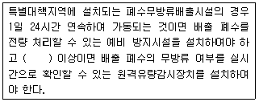